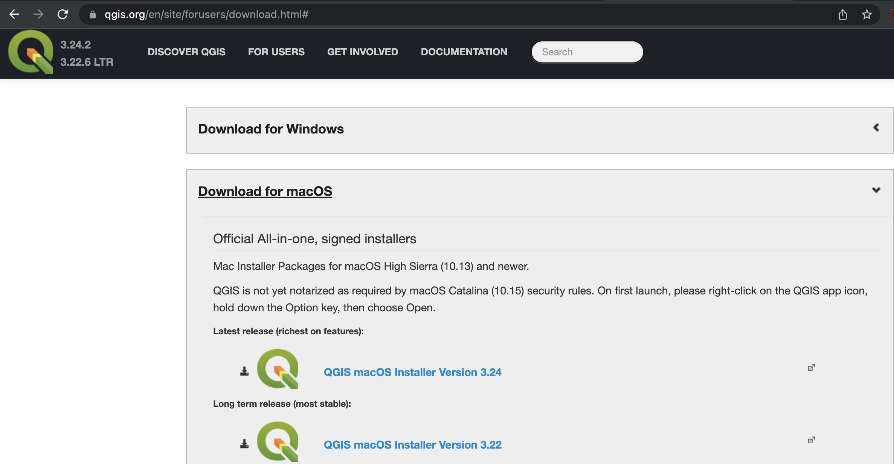

QGIS can be downloaded from qgis.org’s Downloads page. In most cases, you’ll want to download and install the Long term release instead of the latest release.

This will give you most of the functionality you’ll need, without encountering the software bugs of newly released versions.